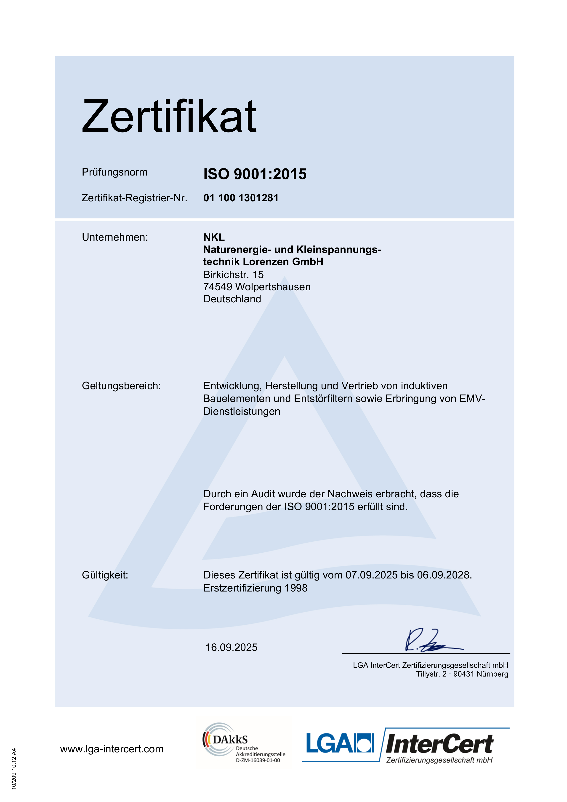

Unsere erfolgreiche Rezertifizierung nach ISO 9001:2015 durch die LGA InterCert (gültig bis 06.09.2028) belegt einmal mehr den hohen Stand unseres Qualitätsmanagementsystems, das wir seit 1998 durchgängig zum Nutzen unserer Kunden und für uns selbst erfolgreich anwenden.


Das aktuelle Zertifikat finden Sie im Downloadbereich.